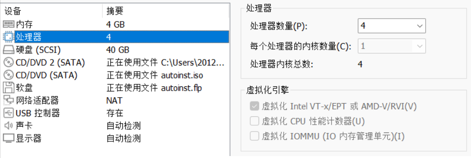
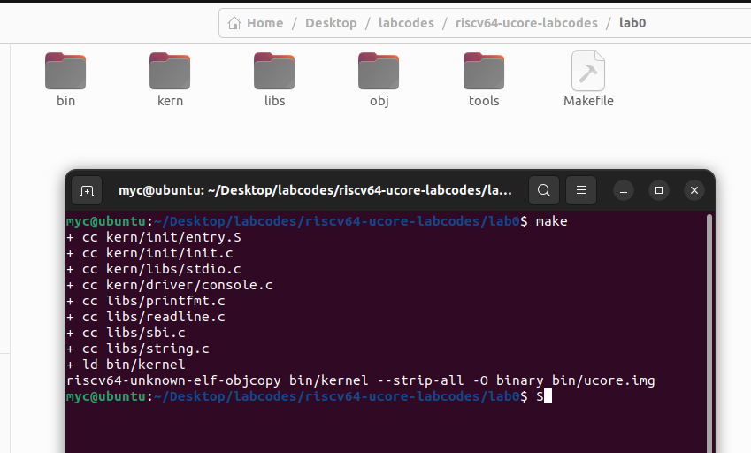
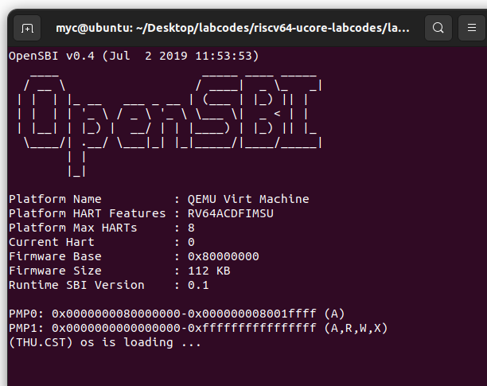
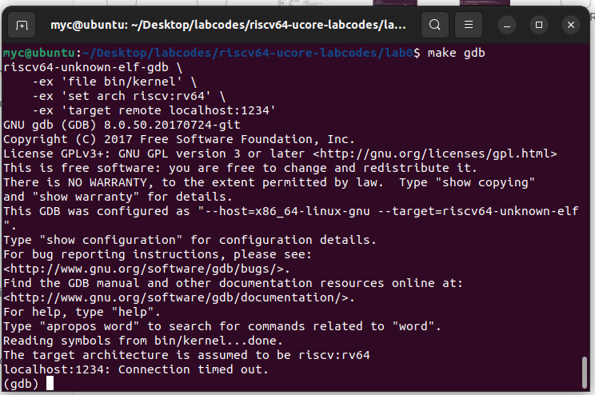
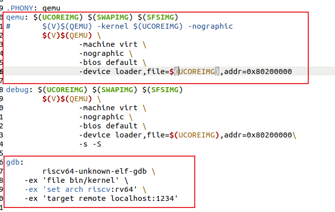
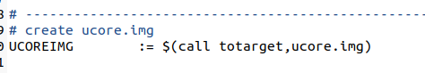

First of All!
sudo apt install libsdl1.2-dev
sudo apt install libtool-bin
sudo apt install libglib2.0-dev
sudo apt install libz-dev
sudo apt install libpixman-1-dev
关于配置环境，我录了一个视频。我所使用的是UBUNTU22，具体设置如下

START
在上面的视频之中，可能有人发现了问题，下面这句话当你退出当前的shell之后会失效。因此你需要把这句话也设置为环境变量，比如写入.bashrc(也许你需要把pwd改成你安装的路径)
export PATH=$PWD/riscv32-softmmu:$PWD/riscv64-softmmu:$PATH
START!
cd lab0
make

then
make qemu
The shell should looks like: 
then , in another shell
make gdb
if :
riscv64-unknown-elf-gdb \
-ex 'file bin/kernel' \
-ex 'set arch riscv:rv64' \
-ex 'target remote localhost:1234'
riscv64-unknown-elf-gdb: error while loading shared libraries: libncurses.so.5: cannot open shared object file: No such file or directory
make: *** [Makefile:177: gdb] Error 127
install it…
if :
riscv64-unknown-elf-gdb \
-ex 'file bin/kernel' \
-ex 'set arch riscv:rv64' \
-ex 'target remote localhost:1234'
riscv64-unknown-elf-gdb: error while loading shared libraries: libpython2.7.so.1.0: cannot open shared object file: No such file or directory
make: *** [Makefile:177: gdb] Error 127
install it…
then,make gdb again!

FINISHI!
question
实验指导书里有这样两条命令
$qemu-system-riscv64 \
-machine virt \
-nographic \
-bios default \
-device loader,file=$(UCOREIMG),addr=0x80200000\
-s -S
riscv64-unknown-elf-gdb \
-ex 'file bin/kernel' \
-ex 'set arch riscv:rv64' \
-ex 'target remote localhost:1234'
直接运行为什么会报错？
UCOREIMG:未找到命令
ANSWER:
-
你没有执行make，这时候那个ucoreimg都没有，自然不会成功。先make，这时候在bin下面会有ucoreimg
-
make了，还是不行。很简单，$(UCOREIMG)是个变量，你在shell里运行，shell会找这个变量。
shell的变量会存在诸如：/etc/environment、.bashrc等地方，你在shell之中输入env可以看见所有shell能找到的变量。
可是shell里没这个东西啊，没人定义，自然就报错了
那么，实验指导书里这两个命令在哪呢？
在makefile里

ucoreimg也在这里被定义了

到此，解释了我们上面为什么运行make qemu和make gdb而不是实验指导书里那几个很长的命令的原因了